【行者无疆·津彩化韵】彩纸裁鸢牵匠魂 行者终程载韵归
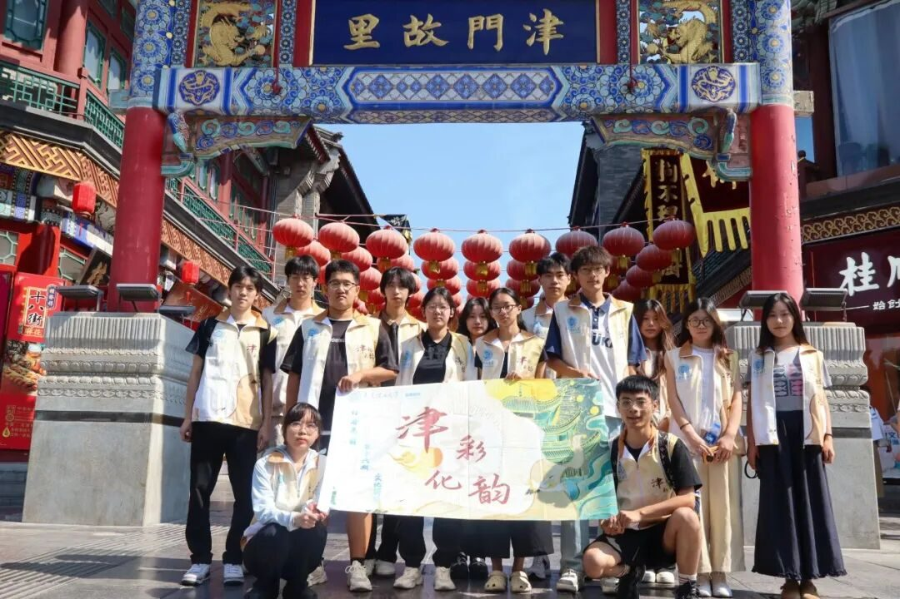
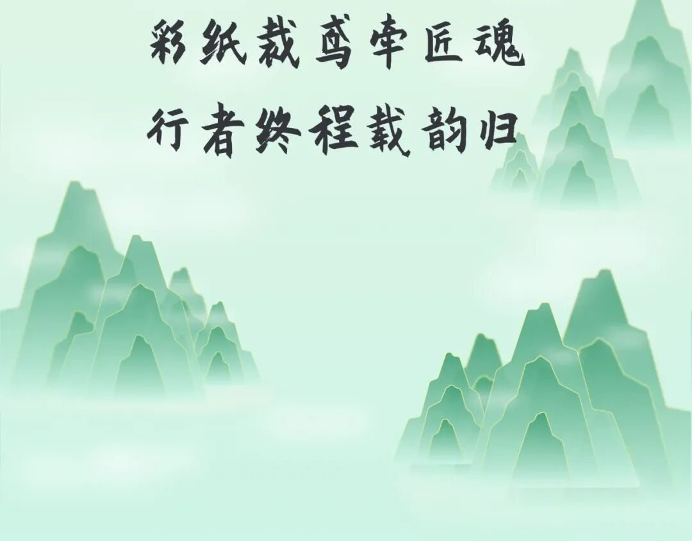
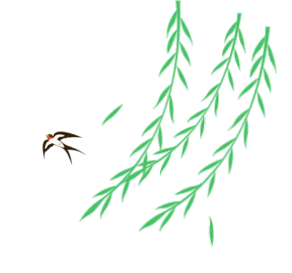
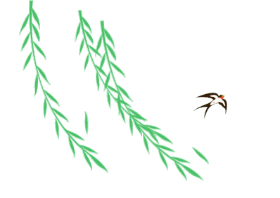
今天，行者们踏着南开区鼓楼北街的青石板路，探访国家级非遗项目“风筝魏”传承人魏国秋老师，为本期实践画上句点。
Today, the travelers walked along the bluestone slab road of Gulou North Street in Nankai District to visit Mr. Wei Guoqiu, the inheritor of the national intangible cultural heritage project "Kite Wei", bringing this phase of practice to a close.
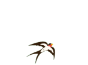
纸鸢翩跹，牵起非遗传承的百年脉络
——天津“风筝魏”制作技艺
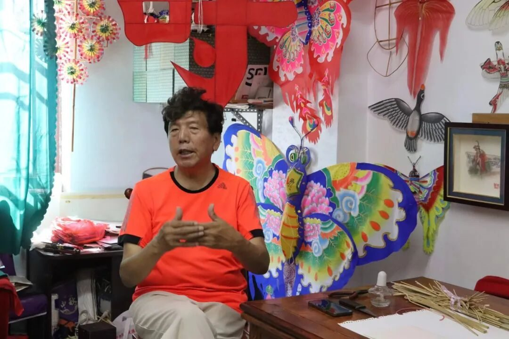
魏国秋，天津“风筝魏”第四代传承人，国家级非遗代表性传承人，中国工艺美术大师。其作品融合传统与现代，获“山花奖”等殊荣，被博物馆收藏。他带徒授艺、推动非遗进校园，更亮相央视《非遗里的中国》等节目，让这门百年技艺成为文化交流的“空中使者”。
初见魏老师，案头竹篾、彩纸错落，满室悬挂摆放的尽是各式各样的风筝。行者们围坐其间，静听魏老师讲述“风筝魏”的百年历程。从清代魏元泰创“骨架分拆、折叠便携”之法，到四代人守正创新，将宫廷技艺融入市井风情，每一段往事都浸着匠心。
随后，行者们在魏老师的指导下为预先准备好的“太极”风筝上色，细致勾勒轮廓、填充色彩，一只只小巧玲珑的风筝逐渐在行者们手中成型。
实践尾声，行者们与魏老师展开了专题访谈。当谈到“风筝魏”的国际化之路时，魏老师坦言这些年一直致力于海外的宣传，足迹已遍布50多个国家。从市集展演到文化交流，魏老师希望通过这些努力，让更多人知道中国非遗的价值。
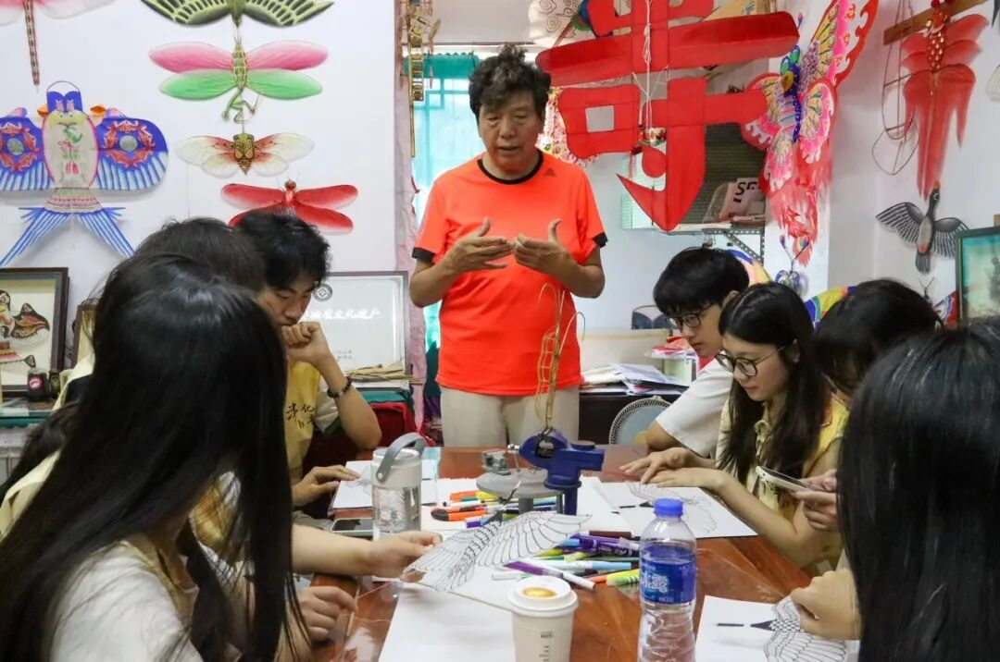
Wei Guoqiu, the fourth-generation inheritor of Tianjin's "Kite Wei", a national representative inheritor of intangible cultural heritage, and a master of Chinese arts and crafts. His works integrate tradition and modernity, have won honors such as the "Shanhua Award", and are collected by museums. He teaches apprentices, promotes intangible cultural heritage in schools, and has appeared on CCTV programs such as "China in Intangible Cultural Heritage", making this century-old technique an "air messenger" for cultural exchanges.
When first meeting Mr. Wei, bamboo strips and colored paper were scattered on his desk, and the room was filled with all kinds of kites hanging and placed around. The travelers sat around, listening quietly as Mr. Wei told the century-old story of "Kite Wei". From Wei Yuantai in the Qing Dynasty who created the method of "detachable skeleton, foldable and portable" to four generations of people who uphold tradition while innovating, integrating court techniques into the local customs, every past event is permeated with craftsmanship.
Subsequently, under Mr. Wei's guidance, the travelers painted the pre-prepared "Tai Chi" kites, carefully outlining the contours and filling in colors. One by one, small and exquisite kites gradually took shape in the travelers' hands.
At the end of the practice, the travelers held a special interview with Mr. Wei. When talking about the internationalization path of "Kite Wei", Mr. Wei frankly said that he has been committed to overseas promotion over the years, with footprints covering more than 50 countries. From market exhibitions to cultural exchanges, Mr. Wei hopes that through these efforts, more people can understand the value of China's intangible cultural heritage.
滑动查看英文版本
行者小结
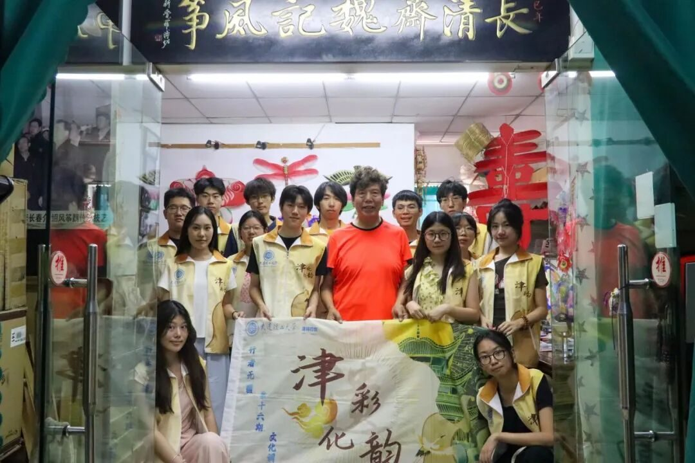
连日来，行者踏遍津门街巷，既调研了天津非遗的发展现状，更以实践触摸了非遗在当代延续的温度和力量。行囊里满载的，不仅是亲手制作的非遗物件，更是一份“让非遗活在当下”的责任。
Over the past few days, the travelers have traveled all over the streets and alleys of Tianjin. They not only investigated the current development status of Tianjin's intangible cultural heritage but also felt the warmth and power of the continuation of intangible cultural heritage in the contemporary era through practice. What's full in their bags is not only the intangible cultural heritage items made by themselves but also a responsibility to "let intangible cultural heritage live in the present".
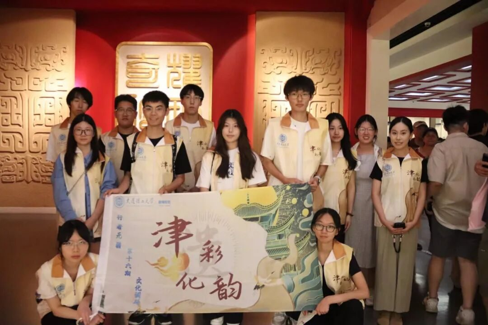
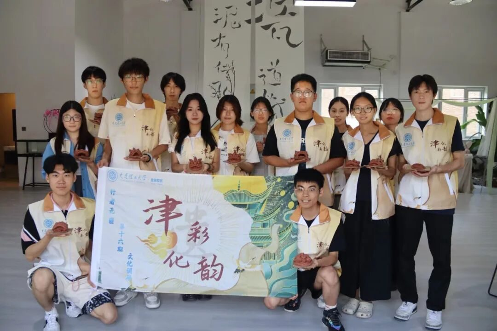
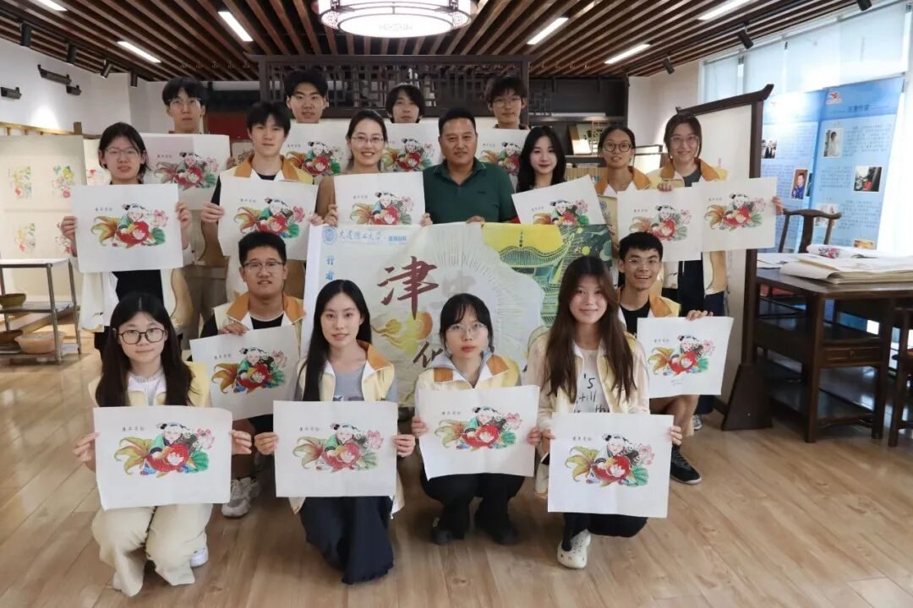
本期“行者无疆·津彩化韵”实践至此圆满落幕。行者之路暂歇，而守护文脉的步履，还在路上。
This phase of the "Boundless Travelers · Splendid Tianjin Cultural Charm" practice has come to a successful conclusion. The journey of the travelers has paused for a while, but the steps to guard the cultural context are still on the way.
「END」
来源 | 行者无疆实践团
文字 | 行者无疆实践团
图片 | 行者无疆实践团
编辑 | 张瑶琪
审核 | 杩健辉 张瑶琪 李凌志
责编 | 邹靓靓 周 亮